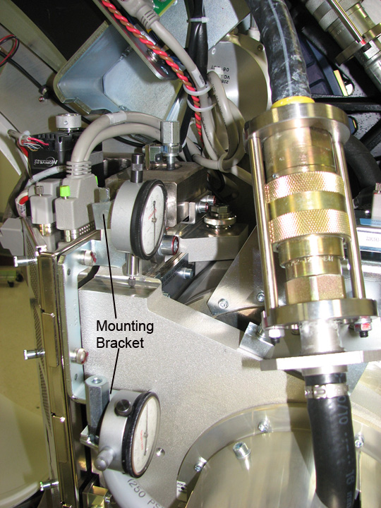

Operating Documentation
Direction 5193575-800, Rev# 5
LightSpeed 7.X Service Information - Adv
Operating Documentation |
| Required Persons | Preliminary Reqs | Procedure | Finalization |
|---|---|---|---|
| 1 | Timing Not Applicable | 30 mins |
Cold ISO Alignment is done before the tube is heated by Generator calibrations. Hot ISO is done later. For details on Hot ISO, see HOT ISO Alignment.
| Last Revised: | 11 September 2008 |
| Item | Qty | Effectivity | Part# | Manufacturer | |
|---|---|---|---|---|---|
| Dial Indicators | 2 | - | - | - | |
Wait 90 minutes if the new tube had more than 25 Kilo Joules of energy input, [kV x mA x Sec ÷ 1000] within the last 30 minutes prior to the start of system alignments. If a tube heat soak has been performed you must wait a minimum of 6 hours before system alignments can be performed.
Run the [ISO ALIGNMENT] tool.
Execute Air scan (small spot).
Execute Air scan (large spot).
Place the 1/8 inch screw driver on the phantom holder (should be pointing into the Z direction).
Execute pin scan (small spot).
Execute pin scan (large spot).
<CALCULATE> ISO center alignment.
Mount both dial indicators on the tube assembly - one for ISO alignment and one for POR. ( Illustration 1.) Make sure that you zero both of them (POR and ISO).
Illustration 1: ISO Dial Gauge Mounting Location

Loosen the 4 M-12 bolts on the tube assembly about 1/8 turn.
Loosening them more than 1/8 turn usually results in unpredictable movement while trying to align the tube.
Adjust the tube UP / DOWN as indicated by the calculation. The adjustment bolt for ISO is located on the tube assembly - left side. Please see screw #1 in Illustration 2.
While moving the tube in the ISO direction the tube will likely move POR out of alignment. By watching both dial indicators you can keep POR in alignment while moving ISO. Go slow - being accurate while moving the tube will reduce the number of iterations, because no unnecessary heat will be put into the tube.
Illustration 2: ISO Alignment Adjustment

| Item | Description |
| 1 | ISO Adjustment Screw |
| 2 | Z Alignment Screw |
Tighten the four (4) M12 bolts and verify dial gauge still reads the correct adjustment value.
Repeat steps 1 through 6.
If the adjustments are within limit proceed to the next step, otherwise go to step 9.
Adjust M12 mounting bolts to pre-load torque specification. Refer to Table 1.
Table 1: Pre-load Torque Specification
| 25 ft.-lbs | 33 N-m | 295 in-lbs | 340 kg-cm |
Apply final torque on all four M12 bolts according to the values specified in Table 2.
Table 2: Final Torque
| 49 ft.-lbs | 66 N-m | 590 in-lbs | 680 kg-cm |
Full System Calibration required (see System Calibration Process)